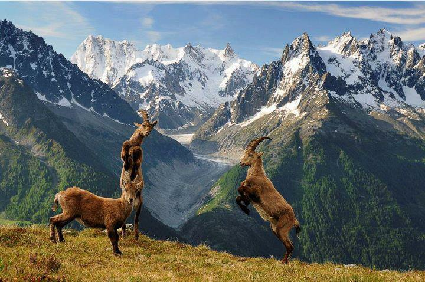

- Khaplu Valley 
- Kachura Lake
- Deosai
- Shangri-La Lake
Beautiful tourist places of Skardu
Second, on the list is the Khaplu Valley which possesses enchanting scenic locations. A curvy road with
several
trees shaded the travelers providing a worth seeing view. Any lens cannot do justice to the
panoramic views.
Above all, the jeep ride adds more twists to your trip. Moreover, the valley is an
ancient
state which lies at the base
of the Karakorum mountain range considers the hub of the Yabgo Dynasty.
Additionally, it also occupies a fort
that now serves as a museum and captures tourists’ attention.

Skardu is blessed with several stupefying lakes that cast a spell on the visitor. In this context, the upper
Kachura
Lake is the most amazing in Skardu. The lake is encircled by dense deep forests and gigantic
mountains of the
Himalayans in the backdrop. No one wants to miss a single sight of this lake. Tourists
can
spend hours there in its
serenity and can enjoy trout fish and boating, rafting as well in its emerald
green
water.

The Skardu Tour can never be completed without visiting the massive plains of Deosai. The land of Giants;
Deosai inhabitant of Brown bears in its National Park. Tourist finds complete calmness in this region of
Skardu
as the plains have an ear-shattering silence that one can listen to his heartbeat. Moreover, you
will
find rare species
of flora and fauna there. Additionally, the dawn and dusk view is a must witnessing
view
to have once in your life.

The red hut cottages surround the Shangri la Lake also known as the upper Kachura Lake. It is almost at the
elevation of 2499m. The lake is a few kilometers away from the lower Kachura Lake and captures tourists
because
of its prodigious beauty. The dense deep forest alongside the lake with red hut cottages and
the
snow-clad mountains
make an amazing combination for the viewer. Moreover, here you will find a rare
diversity of flora and fauna.